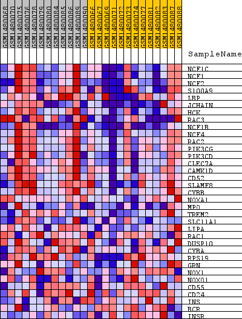
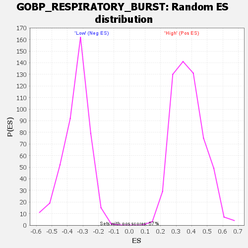

Profile of the Running ES Score & Positions of GeneSet Members on the Rank Ordered List
| Dataset | WG6v3.CYGB.cls#High_versus_Low.CYGB.cls#High_versus_Low_repos |
| Phenotype | CYGB.cls#High_versus_Low_repos |
| Upregulated in class | High |
| GeneSet | GOBP_RESPIRATORY_BURST |
| Enrichment Score (ES) | 0.7836245 |
| Normalized Enrichment Score (NES) | 2.0787106 |
| Nominal p-value | 0.0 |
| FDR q-value | 3.3613996E-4 |
| FWER p-Value | 0.003 |
| SYMBOL | TITLE | RANK IN GENE LIST | RANK METRIC SCORE | RUNNING ES | CORE ENRICHMENT | |
|---|---|---|---|---|---|---|
| 1 | NCF1C | NCF1C | 209 | 0.252 | 0.0637 | Yes |
| 2 | NCF1 | NCF1 | 220 | 0.242 | 0.1348 | Yes |
| 3 | NCF2 | NCF2 | 280 | 0.217 | 0.1959 | Yes |
| 4 | S100A9 | S100A9 | 354 | 0.187 | 0.2476 | Yes |
| 5 | LBP | LBP | 356 | 0.187 | 0.3029 | Yes |
| 6 | JCHAIN | JCHAIN | 368 | 0.183 | 0.3566 | Yes |
| 7 | HCK | HCK | 402 | 0.176 | 0.4071 | Yes |
| 8 | RAC3 | RAC3 | 407 | 0.176 | 0.4590 | Yes |
| 9 | NCF1B | NCF1B | 553 | 0.148 | 0.4953 | Yes |
| 10 | NCF4 | NCF4 | 680 | 0.133 | 0.5282 | Yes |
| 11 | RAC2 | RAC2 | 735 | 0.127 | 0.5630 | Yes |
| 12 | PIK3CG | PIK3CG | 753 | 0.125 | 0.5991 | Yes |
| 13 | PIK3CD | PIK3CD | 789 | 0.122 | 0.6333 | Yes |
| 14 | CLEC7A | CLEC7A | 898 | 0.111 | 0.6605 | Yes |
| 15 | CAMK1D | CAMK1D | 922 | 0.109 | 0.6916 | Yes |
| 16 | CD52 | CD52 | 931 | 0.109 | 0.7233 | Yes |
| 17 | SLAMF8 | SLAMF8 | 1052 | 0.100 | 0.7467 | Yes |
| 18 | CYBB | CYBB | 1097 | 0.097 | 0.7732 | Yes |
| 19 | NOXA1 | NOXA1 | 1418 | 0.079 | 0.7802 | Yes |
| 20 | MPO | MPO | 1739 | 0.067 | 0.7836 | Yes |
| 21 | TREM2 | TREM2 | 2556 | 0.045 | 0.7549 | No |
| 22 | SLC11A1 | SLC11A1 | 2840 | 0.039 | 0.7520 | No |
| 23 | LIPA | LIPA | 2922 | 0.038 | 0.7590 | No |
| 24 | RAC1 | RAC1 | 3136 | 0.034 | 0.7581 | No |
| 25 | DUSP10 | DUSP10 | 3164 | 0.034 | 0.7667 | No |
| 26 | CYBA | CYBA | 5575 | 0.011 | 0.6458 | No |
| 27 | RPS19 | RPS19 | 6810 | 0.006 | 0.5839 | No |
| 28 | GRN | GRN | 8807 | -0.001 | 0.4812 | No |
| 29 | NOX1 | NOX1 | 8958 | -0.001 | 0.4739 | No |
| 30 | NOXO1 | NOXO1 | 9455 | -0.003 | 0.4492 | No |
| 31 | CD55 | CD55 | 13875 | -0.022 | 0.2278 | No |
| 32 | CD24 | CD24 | 14350 | -0.025 | 0.2109 | No |
| 33 | INS | INS | 15270 | -0.033 | 0.1733 | No |
| 34 | BCR | BCR | 17186 | -0.056 | 0.0911 | No |
| 35 | INSR | INSR | 18243 | -0.082 | 0.0608 | No |

